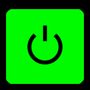
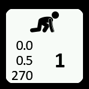
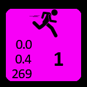
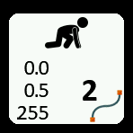

You’ll notice a flashing green screen displaying STANDBY or an icon

From now on you don´t need to be able to read what’s displayed on the screen. The color alone will give you information on which phase of the survey you are in.
From STANDBY mode, to start a section hold the slider left the screen turns WHITE, this indicates READY mode.

Clip the device on the line at the beginning of the first shot.
Hold the slider left the background turns RED, you are in STABILIZE mode ( same as in Verbose survey mode).
Once stabilized, the device goes in READING mode, you can now move along the line, you’ll recognize the flickering BLUE/VIOLET square you already had in Verbose survey mode indicating the wheel is measuring the line

Once you reach the end of the shot hold the slider left again, the background turns RED, you are in STABILIZE mode.
Once stabilized the background becomes white again, you are back in READY mode.

You can repeat the operation for the following shots.
Once you have finished the section, when you are in READY mode, to save the section move the cursor to the right. This will save the data and put the device back in STANDBY mode ( Blinking GREEN).
To exit BASIC survey mode, from the STANDBY mode, hold the cursor to the right during 3s.